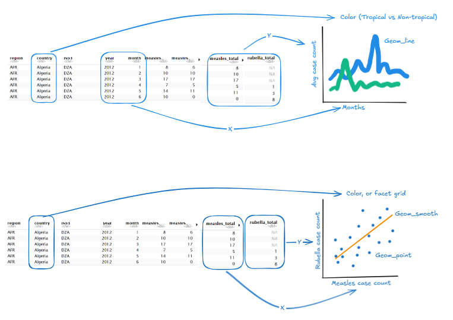
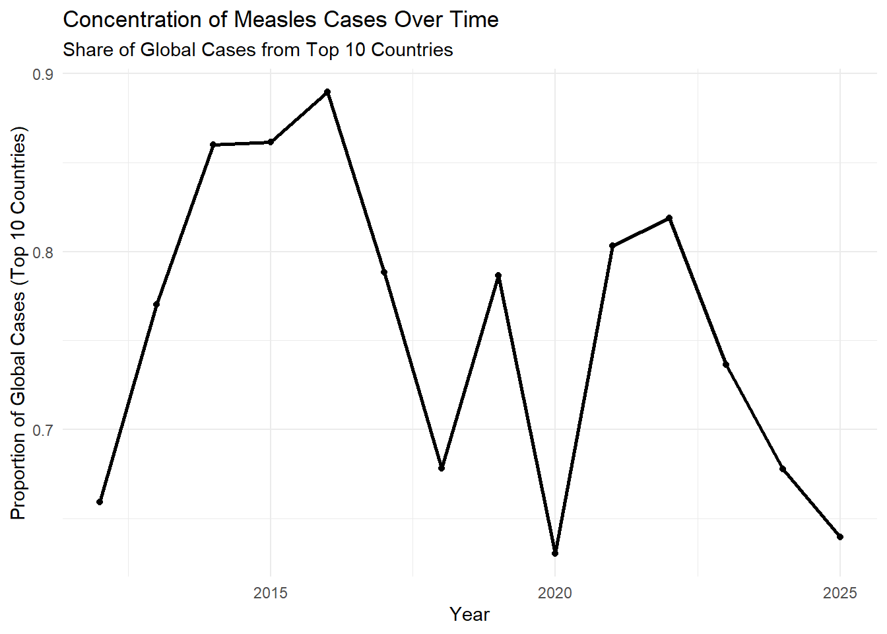
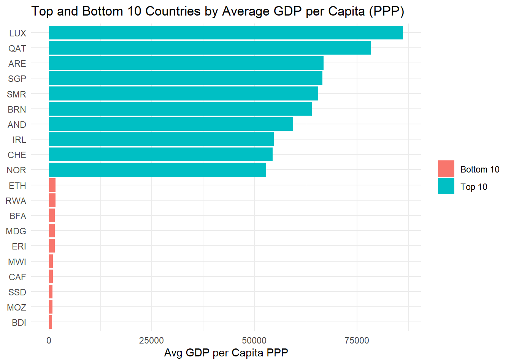

Description: Monthly and yearly reported measles cases and incidence across countries . As measles continues to become a threat across the world, this data set may provide insight patterns and how outbreaks evolve overtime. The unit of observation is a country’s reported case count for a given month or year.
Data Cleaning: There are two datasets cleaned in the initial data cleaning. In both datesets, the column names were changed to use snake case. In the month dataset, numerical columns were converted to numeric type. In the year dataset, the first row was removed and converted as the header, and the column names were given more meaningful names.
Two Research Questions:
Is there a seasonal pattern in measles and rubella outbreaks and does that pattern differ between tropical and non-tropical countries?
Are rubella and measles outbreaks correlated? Are there countries where one virus remains high while the other is low?

Sketch
Two Research Questions with Supplemental Data
How quickly do measles cases decline after major vaccine distributions and does the speed of decline vary by country income level?
Is there an association between outbreak frequency and education levels?
Rows: 22780 Columns: 15
── Column specification ────────────────────────────────────────────────────────
Delimiter: ","
chr (3): region, country, iso3
dbl (12): year, month, measles_suspect, measles_clinical, measles_epi_linked...
ℹ Use `spec()` to retrieve the full column specification for this data.
ℹ Specify the column types or set `show_col_types = FALSE` to quiet this message.
Rows: 2382 Columns: 19
── Column specification ────────────────────────────────────────────────────────
Delimiter: ","
chr (3): region, country, iso3
dbl (16): year, total_population, annualized_population_most_recent_year_onl...
ℹ Use `spec()` to retrieve the full column specification for this data.
ℹ Specify the column types or set `show_col_types = FALSE` to quiet this message.
Are measles cases becoming more concentrated in a smaller number of countries over time?
#Total global cases per yearglobal_totals <- cases_year %>%group_by(year) %>%summarize(global_cases =sum(measles_total, na.rm =TRUE))#Top 10 countries per yeartop10 <- cases_year %>%group_by(year) %>%arrange(year, desc(measles_total)) %>%slice_head(n =10) %>%summarize(top10_cases =sum(measles_total, na.rm =TRUE))#Concentrationconcentration <-left_join(global_totals, top10, by ="year") %>%mutate(top10_share = top10_cases / global_cases)#Plotggplot(concentration, aes(x = year, y = top10_share)) +geom_line(linewidth =1) +geom_point() +labs(title ="Concentration of Measles Cases Over Time",subtitle ="Share of Global Cases from Top 10 Countries",x ="Year",y ="Proportion of Global Cases (Top 10 Countries)" ) +theme_minimal()

How do measles case outcomes differ across regions and years?
The data set being loaded below came from API Ninjas, and it is the GDP API. It contains historical and current data on the Gross Domestic Product of countries around the world. The columns of the data set represent the growth of GDP, nominal GDP, and purchasing power parity. A few columns also have these variables in terms of per capita.
# A tibble: 20 × 3
country avg_gdp_per_capita_ppp group
<chr> <dbl> <chr>
1 LUX 86230. Top 10
2 QAT 78421. Top 10
3 ARE 66858. Top 10
4 SGP 66618. Top 10
5 SMR 65584. Top 10
6 BRN 64026. Top 10
7 AND 59479. Top 10
8 IRL 54712. Top 10
9 CHE 54427. Top 10
10 NOR 52876. Top 10
11 ETH 1590. Bottom 10
12 RWA 1545. Bottom 10
13 BFA 1448. Bottom 10
14 MDG 1417. Bottom 10
15 ERI 1397. Bottom 10
16 MWI 973. Bottom 10
17 CAF 912. Bottom 10
18 SSD 819. Bottom 10
19 MOZ 819. Bottom 10
20 BDI 726. Bottom 10
ggplot(top_bottom_gdp, aes(x =reorder(country, avg_gdp_per_capita_ppp),y = avg_gdp_per_capita_ppp,fill = group)) +geom_col() +coord_flip() +labs(title ="Top and Bottom 10 Countries by Average GDP per Capita (PPP)",x =NULL, y ="Avg GDP per Capita PPP", fill =NULL) +theme_minimal()

Covid API
The data set being loaded below came from API Ninjas, and it is the Covid-19 API. It contains historical data on Covid-19 cases for every country in the world. Each row is a country and each column is a date (of one single day) and what type of Covid-19 case it is (e.g. total, new cases that day). For example, one of the columns represents the new Covid-19 cases recorded on March 12, 2020. After pulling the data for all countries, we cleaned the set to represent the total number of cases of Covid-19 by month. Instead of each column representing a single day, each column now represents a single month of the given year (e.g. January 2020, August 2023).
get_country_data <-function(country) {if (str_detect(country, " ")) { country =str_replace_all(country, " ", "%20") } base_url <-"https://api.api-ninjas.com/v1/covid19" url <-glue("{base_url}?country={country}") response <-GET(url, add_headers("X-Api-Key"= key))if (status_code(response) !=200) {warning(glue("Failed to fetch data for {country}: HTTP {status_code(response)}"))return(NULL) } content <-content(response, as ="text", encoding ="UTF-8") parsed <-fromJSON(content, flatten =TRUE)if (length(parsed) ==0) {warning(glue("No data returned for {country}"))return(NULL) }as.data.frame(parsed)}safe_get_country_data <-safely(get_country_data)country_df <-map(countries, safe_get_country_data) |>map("result") |># Extract just the resultcompact() |># Drop NULLsbind_rows()
all_data_joined <-left_join(join1, country_gdp_df, by =join_by(country_code))
Warning in left_join(join1, country_gdp_df, by = join_by(country_code)): Detected an unexpected many-to-many relationship between `x` and `y`.
ℹ Row 1 of `x` matches multiple rows in `y`.
ℹ Row 1 of `y` matches multiple rows in `x`.
ℹ If a many-to-many relationship is expected, set `relationship =
"many-to-many"` to silence this warning.
This lollipop plot visualizes the spread of total measles cases across the world by year. The peak in this graph is occurring at 2019. In the final report, we will explore further why this peak is happening and if there is a specific country that is responsible.
global_totals <- cases_month |>group_by(year) |>summarize(total_cases =sum(measles_total, na.rm =TRUE))ggplot(global_totals, aes(x = year, y = total_cases)) +geom_segment(aes(yend =0, xend = year), color ="purple2") +geom_point(size =4, color ="purple4") +scale_y_continuous(labels =function(x) format(x, scientific =FALSE)) +theme_minimal() +labs(x ="Year", y ="Total Cases", title ="Measles Cases Across the World Over Time", subtitle ="Total Count of Global Cases by Year")
How does the total number of measles cases compare to the total number of Covid-19 cases across countries in 2020?
measles_2020 <- cases_year |>filter(year ==2020) |>select(country, measles_total_2020 = measles_total)covid_2020 <- covid_cleaned_df |>select(country, starts_with("X2020")) |>rowwise() |>mutate(covid_total_2020 =max(c_across(starts_with("X2020")), na.rm =TRUE)) |>ungroup() |>select(country, covid_total_2020)comparison_2020 <-inner_join(measles_2020, covid_2020, by ="country") |>arrange(desc(covid_total_2020)) |>slice_head(n =10) |>pivot_longer(cols =c(measles_total_2020, covid_total_2020), names_to ="disease", values_to ="cases") |>mutate(disease =case_when(disease =="measles_total_2020"~"Measles", disease =="covid_total_2020"~"COVID-19"), country =fct_reorder(country, cases, .fun = max))ggplot(comparison_long, aes(y = country, x = cases, fill = disease)) +geom_col(position =position_dodge(width =0.75), width =0.65) +scale_x_log10(labels =label_number(scale_cut =cut_short_scale()), breaks =10^(0:8)) +scale_fill_manual(values =c("COVID-19"="#D85A30", "Measles"="#1D9E75")) +labs(title ="Measles vs. COVID-19 Cases in 2020", subtitle ="Top 10 countries by COVID-19 case count — log scale",x ="Total Cases (log scale)", y =NULL, fill =NULL) +theme_minimal(base_size =12) +theme(legend.position ="top", panel.grid.major.y =element_blank(), panel.grid.minor =element_blank(), axis.text.y =element_text(size =10))
Statistical Model
Research Question: Is there a significant difference in mean GDP growth between countries with high versus low measles burden in 2019?
Null Hypothesis: There is no difference in mean GPD growth between high and low measles burden countries in 2019
Alternative Hypothesis: There is a difference in mean GDP growth between high and low measles burden countries in 2019
t.test(gdp_growth ~ high_measles, data = cases_gdp_join)
Welch Two Sample t-test
data: gdp_growth by high_measles
t = -1.0426, df = 121, p-value = 0.2992
alternative hypothesis: true difference in means between group FALSE and group TRUE is not equal to 0
95 percent confidence interval:
-1.5327565 0.4752642
sample estimates:
mean in group FALSE mean in group TRUE
2.566667 3.095413
Conclusion: Using the 2019 data, a year marked by a notable rise in measles cases, countries were classified as high measles burden if their lab-confirmed measles cases exceeded the median of 48 cases. A two sample t-test resulted in no significant difference in mean GDP growth between countries with high and low measles burden. Due to a t-value = -1.04 and a p-value = 0.299 > alpha = 0.05, we fail to reject the null hypothesis.